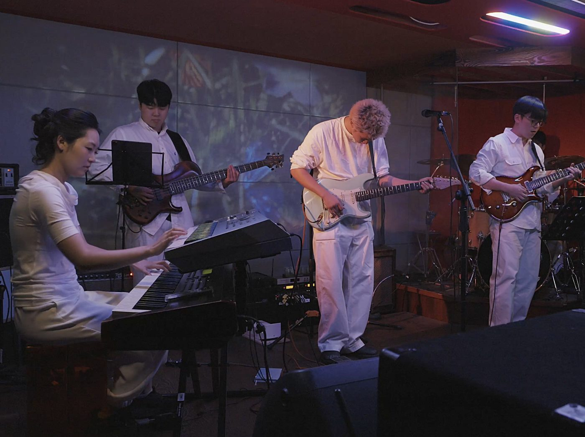
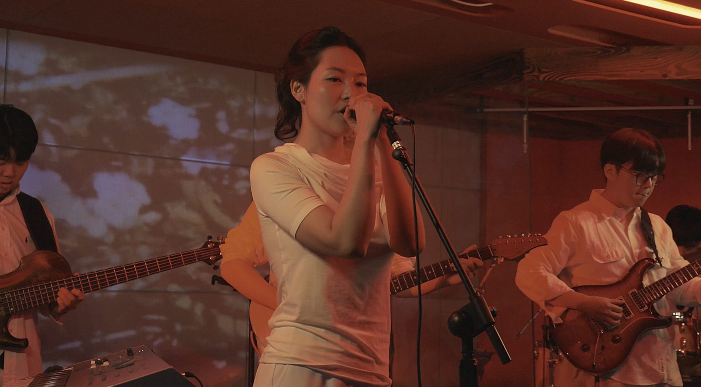
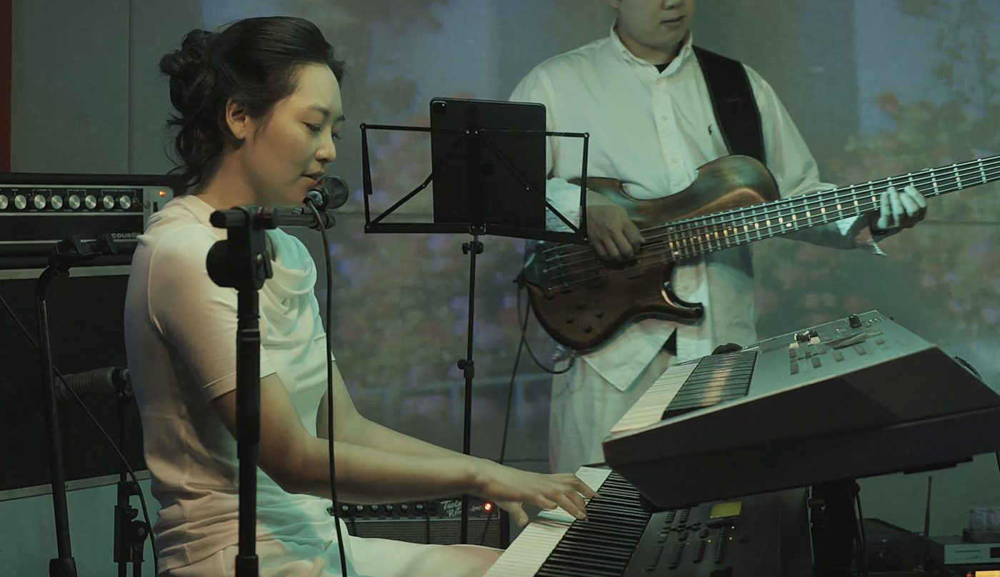
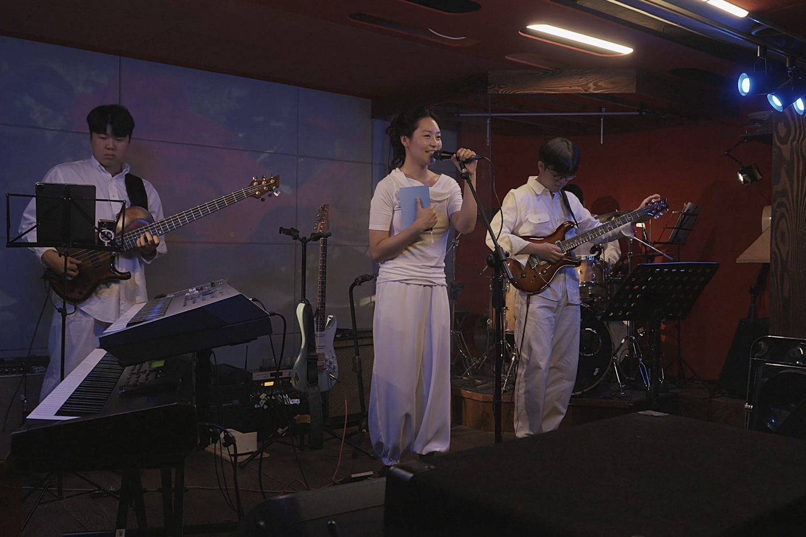
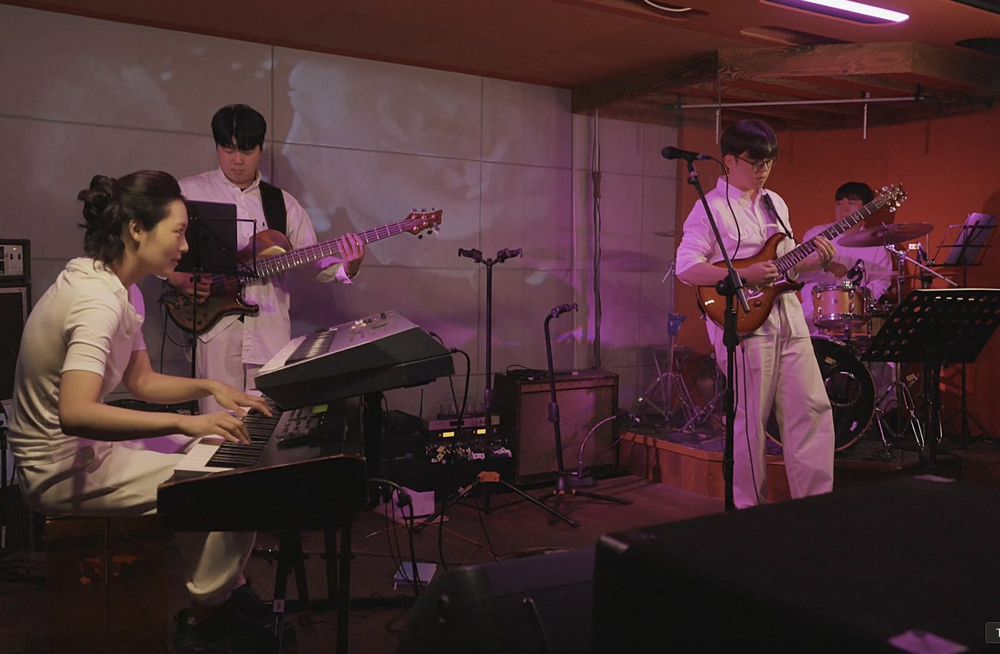
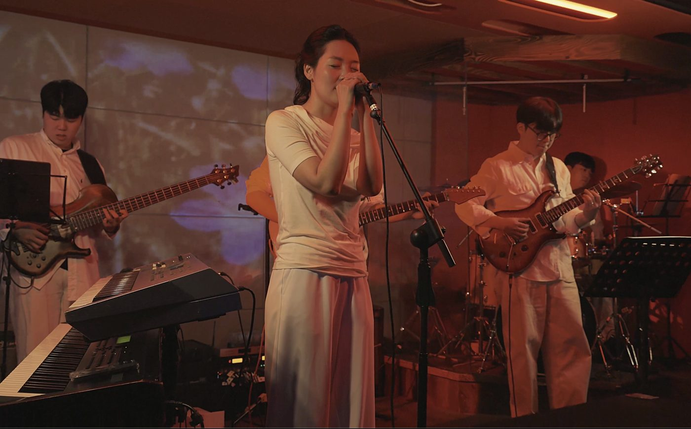

Singer-songwriter · Composer · Pianist
꿈과 현실, 머무르지 않고 흘러가는 것들에 대하여.
포크와 모던 인디 록 기반 싱어송라이터. 클래식 피아노를 바탕으로 재즈 화성을 익히고, 모던록의 추진력과 포크의 서정, 재즈의 입체적인 색채를 자신만의 언어로 엮는다. 작사·작곡·편곡부터 프로듀싱과 연주까지 직접 맡은 데뷔 앨범 [Reverie in Shadows](2024)는 장르의 경계를 넘나들면서도 하나의 선명한 음악적 시선을 견지한다.
조현의 음악은 장면에서 출발해 소리로 완성된다. 꿈과 현실, 삶과 죽음, 존재하다 사라지는 것들에 대한 감각이 피아노의 섬세한 터치와 밀도 높은 사운드, 서정적인 멜로디 안에 스며든다. 흐릿한 풍경과 문학적 이미지에서 출발하지만, 그가 만드는 음악은 관념에 머물지 않는다. 정교한 화성과 다이내믹, 직관적인 멜로디를 통해 사적인 서사를 감각적인 팝의 언어로 확장한다.
2026년에는 피아노 싱글 〈목련〉을 발표하고, 경기문화재단 선정 기획공연 〈프로젝트 흰〉을 선보였다. OPCD Apollo · 한국대중음악상 송캠프에 참여했으며, 5th OPCD STAGE : UNIVERSE 무대에 올랐다. 현재는 다음 정규 앨범을 작업하며 자신만의 사운드를 더욱 깊고 선명하게 다듬고 있다.
〈목련〉
2026년 발표한 피아노 싱글로, 같은 해 5th OPCD STAGE : UNIVERSE 무대에서는 밴드 편성으로 다시 연주했다.
[Reverie in Shadows]는 조현의 깊은 음악적 여정과 치열한 고민을 담아낸 첫 앨범이다.
꿈과 현실, 삶과 죽음의 경계를 모던록의 경쾌한 리듬과 어딘지 모르게 씁쓸한 멜로디로 풀어내며, 흐린 자연의 풍경 속에서 자유로움을 갈망하는 인간의 영혼을 투명하게 비추며 질주한다. 전곡의 작사, 작곡, 편곡, 프로듀싱, 그리고 목소리와 피아노까지 해낸 조현의 첫 앨범은 긴 내면의 여정 끝에 완성되었다.
죽음을 눈앞에 둔 노인이 마지막 순간, 숲으로 형상화한 대뇌(전두엽) 속에서 자기 존재를 확인하며 자연적인 쇠퇴를 성찰하는 시간.
한여름 장마철, 축축하고 습한 공기의 흐린 날. 학교 교실 창문 밖 검푸른 숲을 바라보는 아이들에 대한 상상에서 영감을 얻은 곡.
숏폼과 알고리즘이 만연한 시대, 어떤 가치가 가장 중요하고 무엇에 우선순위를 두며 살아갈지 고민하는 젊은 세대를 생각하며 만든 노래.
삶의 순환을 담은 여덟 트랙의 음악적 서사는 작가주의적인 동시에 팝적인 요소와 민속적인 감성을 자연스럽게 결합하여 깊이 있는 공감을 전한다.
Tracklist
Credits






목련 · Sorrowing Wind · Softly as in a Morning Sunrise (Hiromi cover)
경기문화재단 선정 공연 — 자작곡과 재즈 편곡, 영상 프로젝션을 더한 1시간의 기획공연
공동 작업곡 진행
Time Traveler 등 직접 이끄는 앙상블과 클럽·라운지 무대
Business Automation Engineer at Coupang
쿠팡이츠 CXM Performance Development 팀에서 운영 자동화와 데이터 파이프라인을 개발합니다.
For bookings & collaborations, email or DM